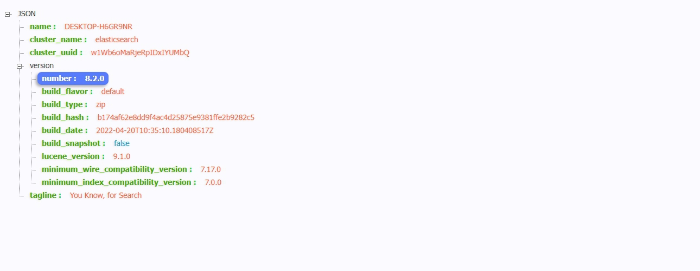
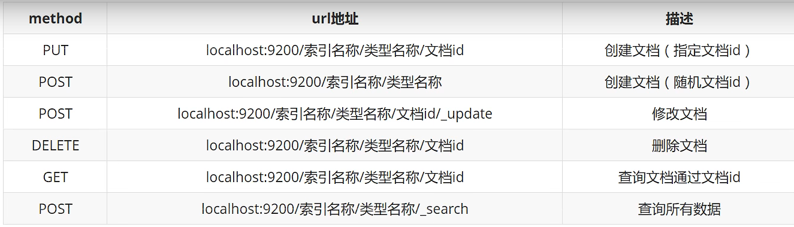
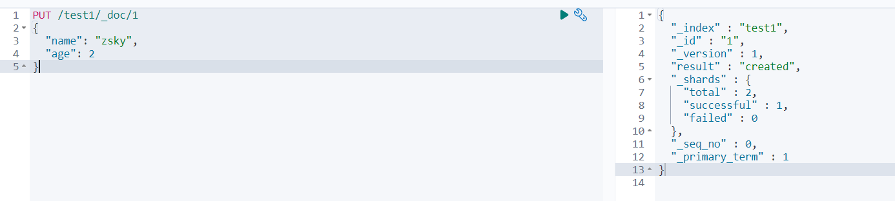
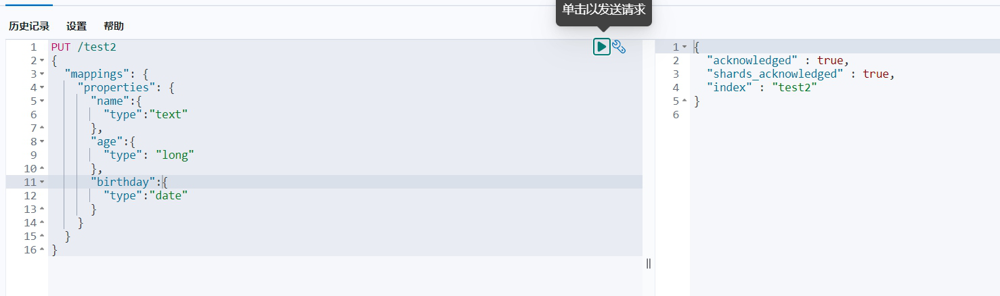
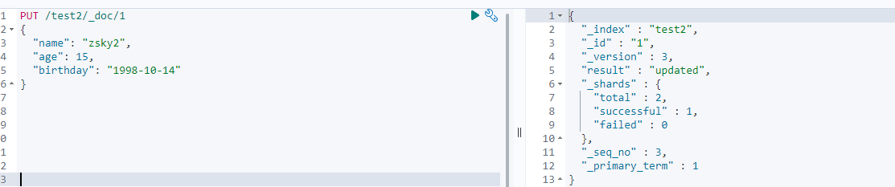
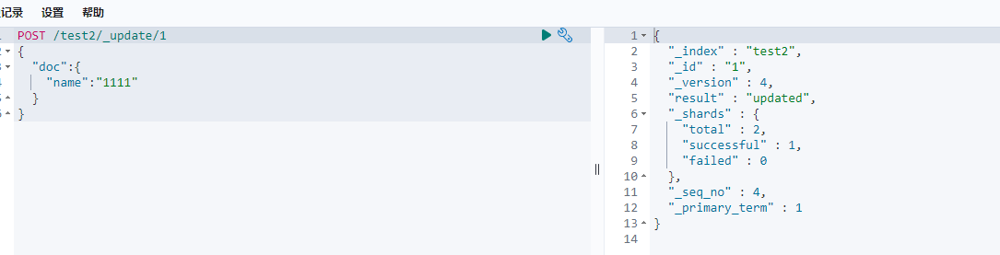
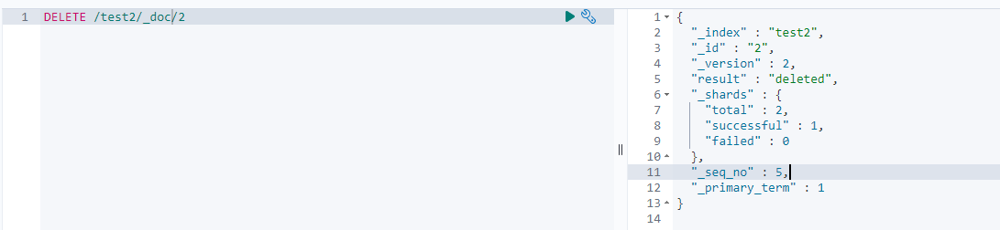

这篇ElasticSearch文章是基于 狂神说 和 Java3y 两位大佬所写的ElasticSearch文章的笔记与总结，仅供个人学习和复习用。欲学习ElasticSearch知识推荐前往两位大佬的博客中学习。
Windows下ElasticSearch安装
下载地址
https://www.elastic.co/cn/elasticsearch/
下载解压即可使用。
安装
直接解压就行，注意因为8.0版本后开启了ssl认证以及需要密码等问题可以参考以下链接进行处理。Windows10下安装Elasticsearch8.1.1过程遇到的问题
上面那篇是比较安全的做法，如果不想那么麻烦，或者不考虑安全可以参考以下的做法。ElasticSearch 爬坑记录
在config目录的elasticsearch.yml中修改配置
提示：个人经历，可能得先运行启动elasticsearch.bat，闪退之后重新打开yml文件会多出需要改的那几行配置。
1.关闭ssl认证
# Enable encryption for HTTP API client connections, such as Kibana, Logstash, and Agents
xpack.security.http.ssl:
enabled: false
keystore.path: certs/http.p122.关闭密码验证
# Enable security features
xpack.security.enabled: false运行bin目录的elasticsearch.bat，在浏览器打开127.0.0.1:9200出现以下界面则成功。

可视化界面安装(可忽略)
下载地址
https://github.com/mobz/elasticsearch-head
解压后cmd打开安装依赖
cd elasticsearch-head
npm install
npm run start
open http://localhost:9100/如存在跨越问题需修改ElasticSearch的配置
http.cors.enabled: true
http.cors.allow-origin: "*"ik分词器
下载地址：https://github.com/medcl/elasticsearch-analysis-ik
下载后在elasticsearch的plugins目录新建ik文件夹并解压到这里。(注意在安装路径中不要存在空格否则将导致ElasticSearch和Kibana启动失败)
Rest风格

测试用例
1.创建一个索引
PUT /索引名/类型名(过时)/文档id
{请求体}
PUT /test1/_doc/1
{
"name": "zsky",
"age": 2
}
PUT /test2
{
"mappings": {
"properties": {
"name":{
"type":"text"
},
"age":{
"type": "long"
},
"birthday":{
"type":"date"
}
}
}
}

2.修改索引
PUT /test2/_doc/1
{
"name": "zsky2",
"age": 15,
"birthday": "1998-10-14"
}
POST /test2/_update/1
{
"doc":{
"name":"1111"
}
}

3.删除文档
DELETE /test2/_doc/2
4.查询文档
GET /zsky/_search?q=name:王五3
结果：
{
"took" : 1,
"timed_out" : false,
"_shards" : {
"total" : 1,
"successful" : 1,
"skipped" : 0,
"failed" : 0
},
"hits" : {
"total" : {
"value" : 1,
"relation" : "eq"
},
"max_score" : 1.2814486,
"hits" : [
{
"_index" : "zsky",
"_id" : "3",
"_score" : 1.2814486,
"_source" : {
"name" : "王五2",
"age" : 1,
"desc" : "333333",
"tags" : [
"渣男",
"交友"
]
}
}
]
}
}
注意以上结果当路径的name:不带双引号时是分词查询即将王五3分成王五和3去like模糊查询能查询到结果，带双引号时则不分词用双引号内容like模糊查询所以查不到结果。如果需要精准查询则改为
GET /zsky/_search
{
"query": {
"match": {
"name.keyword": "王"
}
}
}
GET /zsky/_search
{
"query": {
"match": {
"name": "王"
}
},
"_source": ["name","desc","age"], //只查询的字段
"sort": [ //排序
{
"age": {
"order": "asc"
}
}
],
"from": 0, //分页起始坐标
"size": 2 //每次查询的数据
}5.高亮
GET /zsky/_search
{
"query": {
"match": {
"name": "王 李"
}
},
"highlight": {
"fields": {
"name": {}
}
}
}
结果：
{
"took" : 242,
"timed_out" : false,
"_shards" : {
"total" : 1,
"successful" : 1,
"skipped" : 0,
"failed" : 0
},
"hits" : {
"total" : {
"value" : 3,
"relation" : "eq"
},
"max_score" : 1.4877305,
"hits" : [
{
"_index" : "zsky",
"_id" : "2",
"_score" : 1.4877305,
"_source" : {
"name" : "李四",
"age" : 11,
"desc" : "222222",
"tags" : [
"美女",
"唱歌"
]
},
"highlight" : {
"name" : [
"<em>李</em>四"
]
}
},
{
"_index" : "zsky",
"_id" : "4",
"_score" : 0.57843524,
"_source" : {
"name" : "王三",
"age" : 7,
"desc" : "444444444444",
"tags" : [
"学生",
"看书"
]
},
"highlight" : {
"name" : [
"<em>王</em>三"
]
}
},
{
"_index" : "zsky",
"_id" : "3",
"_score" : 0.4889865,
"_source" : {
"name" : "王五2",
"age" : 1,
"desc" : "333333",
"tags" : [
"渣男",
"交友"
]
},
"highlight" : {
"name" : [
"<em>王</em>五2"
]
}
}
]
}
}集成SpringBoot
导入POM文件
<?xml version="1.0" encoding="UTF-8"?>
<project xmlns="http://maven.apache.org/POM/4.0.0" xmlns:xsi="http://www.w3.org/2001/XMLSchema-instance"
xsi:schemaLocation="http://maven.apache.org/POM/4.0.0 https://maven.apache.org/xsd/maven-4.0.0.xsd">
<modelVersion>4.0.0</modelVersion>
<parent>
<groupId>org.springframework.boot</groupId>
<artifactId>spring-boot-starter-parent</artifactId>
<version>2.7.0</version>
<relativePath/> <!-- lookup parent from repository -->
</parent>
<groupId>com.zsky</groupId>
<artifactId>es-api</artifactId>
<version>0.0.1-SNAPSHOT</version>
<name>es-api</name>
<description>Demo project for Spring Boot</description>
<properties>
<java.version>1.8</java.version>
<!--自己定义es版本依赖，保证与本地一致-->
</properties>
<dependencies>
<dependency>
<groupId>co.elastic.clients</groupId>
<artifactId>elasticsearch-java</artifactId>
<version>8.2.0</version>
</dependency>
<dependency>
<groupId>com.fasterxml.jackson.core</groupId>
<artifactId>jackson-databind</artifactId>
<version>2.12.3</version>
</dependency>
<dependency>
<groupId>jakarta.json</groupId>
<artifactId>jakarta.json-api</artifactId>
<version>2.0.1</version>
</dependency>
<dependency>
<groupId>org.springframework.boot</groupId>
<artifactId>spring-boot-starter-web</artifactId>
</dependency>
<dependency>
<groupId>org.springframework.boot</groupId>
<artifactId>spring-boot-devtools</artifactId>
<scope>runtime</scope>
<optional>true</optional>
</dependency>
<dependency>
<groupId>org.springframework.boot</groupId>
<artifactId>spring-boot-configuration-processor</artifactId>
<optional>true</optional>
</dependency>
<dependency>
<groupId>javax.annotation</groupId>
<artifactId>javax.annotation-api</artifactId>
<version>1.3.2</version>
</dependency>
<dependency>
<groupId>org.projectlombok</groupId>
<artifactId>lombok</artifactId>
<optional>true</optional>
</dependency>
<dependency>
<groupId>org.springframework.boot</groupId>
<artifactId>spring-boot-starter-test</artifactId>
<scope>test</scope>
</dependency>
<dependency>
<groupId>com.alibaba</groupId>
<artifactId>fastjson</artifactId>
<version>1.2.75</version>
</dependency>
</dependencies>
<build>
<plugins>
<plugin>
<groupId>org.springframework.boot</groupId>
<artifactId>spring-boot-maven-plugin</artifactId>
<configuration>
<excludes>
<exclude>
<groupId>org.projectlombok</groupId>
<artifactId>lombok</artifactId>
</exclude>
</excludes>
</configuration>
</plugin>
</plugins>
</build>
</project>修改配置文件
elasticsearch:
hosts: "127.0.0.1:9200"配置类
ElasticSearchClientConfig
package com.zsky.esapi.config;
import co.elastic.clients.elasticsearch.ElasticsearchClient;
import co.elastic.clients.json.jackson.JacksonJsonpMapper;
import co.elastic.clients.transport.ElasticsearchTransport;
import co.elastic.clients.transport.rest_client.RestClientTransport;
import org.apache.http.HttpHost;
import org.elasticsearch.client.RestClient;
import org.springframework.boot.context.properties.ConfigurationProperties;
import org.springframework.context.annotation.Bean;
import org.springframework.context.annotation.Configuration;
import org.springframework.util.StringUtils;
@ConfigurationProperties(prefix = "elasticsearch")//配置配置信息的前缀
@Configuration
public class ElasticSearchClientConfig {
private String hosts;
@Bean
public RestClient restClient(){
// Create the low-level client
HttpHost[] httpHosts = toHttpHost();
RestClient restClient = RestClient.builder(httpHosts).build();
return restClient;
}
@Bean
public ElasticsearchClient esClient(){
RestClient restClient = restClient();
ElasticsearchTransport transport = new RestClientTransport(restClient, new JacksonJsonpMapper());
//es 客户端
ElasticsearchClient client = new ElasticsearchClient(transport);
return client;
}
/*
解析hosts
*/
private HttpHost[] toHttpHost(){
if(!StringUtils.hasLength(hosts)){
throw new RuntimeException("elasticsearch.host不能为空！");
}
String[] hostArray = hosts.split(",");;
HttpHost[] httpHosts = new HttpHost[hostArray.length];
HttpHost httpHost;
for (int i = 0; i < hostArray.length; i++) {
String[] strings = hostArray[i].split(":");
httpHost = new HttpHost(strings[0], Integer.parseInt(strings[1]), "http");
httpHosts[i] = httpHost;
}
return httpHosts;
}
public String getHosts() {
return hosts;
}
public void setHosts(String hosts) {
this.hosts = hosts;
}
}实体类
User
package com.zsky.esapi.pojo;
import lombok.AllArgsConstructor;
import lombok.Data;
import lombok.NoArgsConstructor;
import org.springframework.stereotype.Component;
@Data
@AllArgsConstructor
@NoArgsConstructor
@Component
public class User {
private String name;
private int age;
public String getName() {
return name;
}
public void setName(String name) {
this.name = name;
}
public int getAge() {
return age;
}
public void setAge(int age) {
this.age = age;
}
}测试类
package com.zsky.esapi;
import co.elastic.clients.elasticsearch.ElasticsearchClient;
import co.elastic.clients.elasticsearch._types.AcknowledgedResponse;
import co.elastic.clients.elasticsearch._types.Time;
import co.elastic.clients.elasticsearch._types.query_dsl.QueryBuilders;
import co.elastic.clients.elasticsearch._types.query_dsl.TermQuery;
import co.elastic.clients.elasticsearch.core.*;
import co.elastic.clients.elasticsearch.core.search.Hit;
import co.elastic.clients.elasticsearch.indices.*;
import co.elastic.clients.elasticsearch.indices.ExistsRequest;
import co.elastic.clients.json.jackson.JacksonJsonpMapper;
import co.elastic.clients.transport.ElasticsearchTransport;
import co.elastic.clients.transport.endpoints.BooleanResponse;
import co.elastic.clients.transport.rest_client.RestClientTransport;
import com.fasterxml.jackson.databind.node.ObjectNode;
import com.zsky.esapi.pojo.User;
import org.elasticsearch.client.RestClient;
import org.junit.jupiter.api.Test;
import org.springframework.beans.factory.annotation.Autowired;
import org.springframework.beans.factory.annotation.Qualifier;
import org.springframework.boot.test.context.SpringBootTest;
import java.io.IOException;
import java.util.ArrayList;
import java.util.HashMap;
import java.util.List;
import java.util.Map;
@SpringBootTest
class EsApiApplicationTests {
@Autowired
private RestClient restClient;
@Autowired
@Qualifier("esClient")
private ElasticsearchClient esClient;
@Test
void createIndex() throws IOException {
ElasticsearchTransport transport = new RestClientTransport(restClient, new JacksonJsonpMapper());
//es 客户端
ElasticsearchClient client = new ElasticsearchClient(transport);
CreateIndexResponse indexResponse = client.indices().create(c -> c.index("zskytest"));
System.out.println(indexResponse.index());
}
@Test
void createIndex2() throws IOException {
CreateIndexResponse indexResponse = esClient.indices().create(c -> c.index("zskytest22"));
System.out.println(indexResponse.index());
}
@Test
void existIndex() throws IOException {
ExistsRequest existsRequest = new ExistsRequest.Builder().index("zskytest").build();
BooleanResponse exists = esClient.indices().exists(existsRequest);
System.out.println(exists.value());
}
@Test
void deleteIndex() throws IOException {
DeleteIndexRequest deleteIndexRequest = new DeleteIndexRequest.Builder().index("zskytest22").build();
AcknowledgedResponse delete = esClient.indices().delete(deleteIndexRequest);
System.out.println(delete.acknowledged());
}
//文档操作
@Test
void addDocument() throws IOException {
//创建对象
User user = new User("zsky", 15);
//创建请求 规则 put /zskytest/_doc/1
IndexRequest<User> request = IndexRequest.of(i -> i.index("zskytest").id("1").document(user));
// 发送请求，获取响应结果
IndexResponse response = esClient.index(request);
System.out.println(response.toString());
System.out.println(response.result());
//非对象方式创建文档
Map<String,String> map = new HashMap<>();
map.put("name","张三");
map.put("age","22");
CreateRequest createRequest = CreateRequest.of(i -> i.index("zskytest").id("2").document(map));
CreateResponse createResponse = esClient.create(createRequest);
System.out.println(createResponse.result());
}
//判断文档是否存在
@Test
void testIsExists() throws IOException {
GetResponse<User> response = esClient.get(g -> g.index("zskytest").id("1"),User.class);
if(response.found()){
User user = response.source();
System.out.println("查询到文档信息");
}else {
System.out.println("未查询到文档信息");
}
//根据需要同过json获取，可不用实体类 注意ObjectNode需要Maven配置json 例如本例中引入的包com.fasterxml.jackson.databind.node.ObjectNode;
GetResponse<ObjectNode> response2 = esClient.get(g -> g.index("zskytest").id("1"),ObjectNode.class);
if(response.found()){
ObjectNode json = response2.source();
String name = json.get("name").asText();
System.out.println("查询到文档信息");
System.out.println(response2.toString());
}else {
System.out.println("未查询到文档信息");
}
}
//查询所有文档
@Test
void searchAllIndex() throws IOException {
List<Object> resultList = new ArrayList<>();
SearchRequest searchRequest = SearchRequest.of(i -> i.index("zskytest"));
SearchResponse<Object> response = esClient.search(searchRequest,Object.class);
if(response.hits() != null){
List<Hit<Object>> list = response.hits().hits();
for(Hit<Object> hit : list){
Object t = (Object) hit.source();
resultList.add(t);
}
}
System.out.println(response.hits());
}
//修改文档
@Test
void updateDoc() throws IOException {
User user = new User("zsky", 10);
UpdateRequest updateRequest = UpdateRequest.of(i -> i.index("zskytest").id("1").doc(user));
UpdateResponse updateResponse = esClient.update(updateRequest,User.class);
System.out.println(updateResponse.result());
//不使用实体类方式修改文档
Map<String,String> map = new HashMap<>();
map.put("name","张三");
map.put("age","25");
UpdateRequest updateRequest2 = UpdateRequest.of(i -> i.index("zskytest").id("2").doc(map));
UpdateResponse updateResponse2 = esClient.update(updateRequest2,Object.class);
System.out.println(updateResponse2.result());
}
//删除文档
@Test
void deleteDoc() throws IOException {
DeleteRequest request = DeleteRequest.of(i -> i.index("zskytest").id("2"));
DeleteResponse response = esClient.delete(request);
System.out.println(response.result());
}
@Test
void queryDoc() throws IOException {
List<Object> resultList = new ArrayList<>();
TermQuery query = QueryBuilders.term().field("name").value("张三").build();
SearchRequest request = new SearchRequest.Builder().index("zskytest").query(query._toQuery()).build();
SearchResponse<Object> response = esClient.search(request,Object.class);
if(response.hits() != null){
List<Hit<Object>> list = response.hits().hits();
for(Hit<Object> hit : list){
Object t = (Object) hit.source();
resultList.add(t);
}
}
}
}